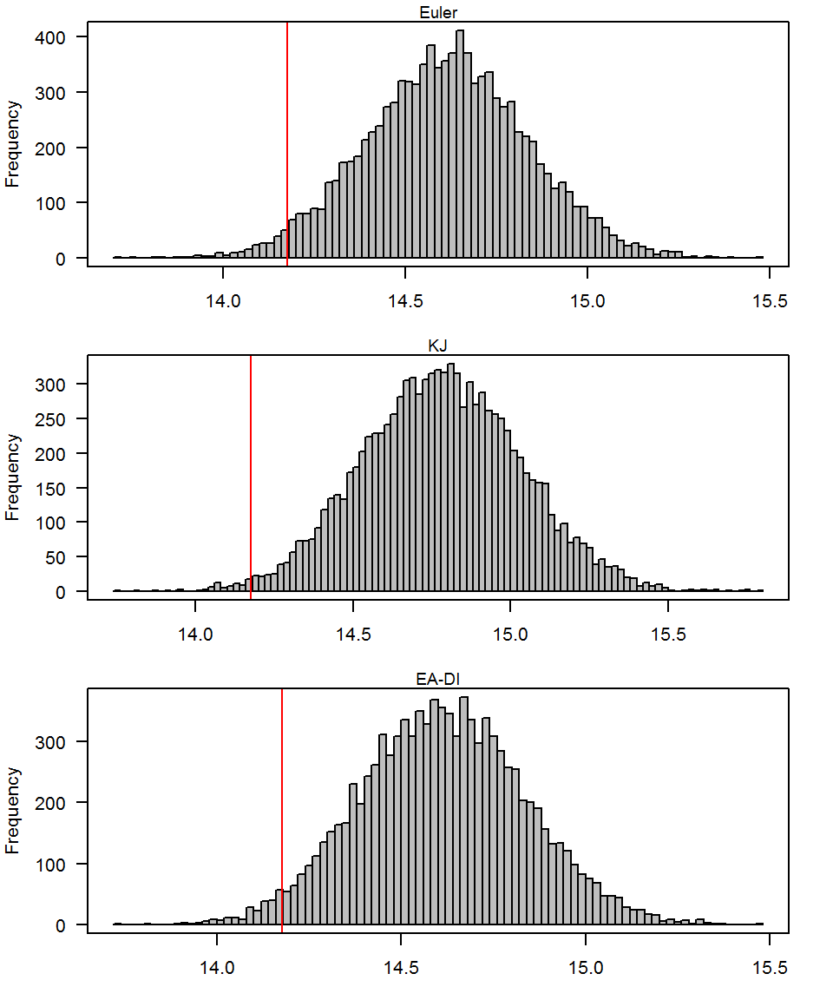

C Implementations
C.1 Euler Scheme
hestoneuler <- function(S, X, r, v, theta, rho, k,
sigma, t = 0, dt = NULL, tau = 1, N){
if(is.null(dt)){ dt <- (tau-t)/1000}
sequencia <- seq(t,tau,dt)
ST <- matrix(NA, length(sequencia), N) #transformar em matrix
aux <- NULL
sqrt_dt <- sqrt(dt)
for(i in sequencia){
Zv <- stats::rnorm(N)
Zt <- stats::rnorm(N)
Zs <- rho * Zv + (sqrt(1 - (rho^2)) * Zt)
aux <- v
aux[v < 0] <- 0
sqrt_aux <- sqrt(aux)
S <- S * (1 + r * dt + sqrt_aux * Zs * sqrt_dt)
S[S <= 0] = 0
v <- v + k * dt * (theta - aux) + sigma * sqrt_aux * Zv * sqrt_dt
ST[j,] <- S
}
rm(aux, v, Zv, Zt, Zs, S, j)
ST <- as.matrix(ST, ncol=N)
Result <- ST[nrow(ST),] - X
Result[Result <= 0] = 0
call = mean(exp(-r*(tau-t))*Result)
lista = list('call' = call, 'Result' = Result, 'Spot' = ST)
return(lista)
}C.2 Kahl-Jackel Implementation
Hestoncallkj <- function(S, X, r, q, v, theta, rho, k,
sigma, t = 0, dt = NULL, tau = 1, N){
if(is.null(dt)){ dt <- (T-t)/1000}
v <- rep(v,N)
theta<- rep(theta,N)
sequencia <- seq(t,tau,dt)
ST <- matrix(NA, length(sequencia), N) #transformar em matrix
S <- log(S)
for(i in seq(t,tau,dt)){
Zv <- stats::rnorm(N)
Zt <- stats::rnorm(N)
Zs <- rho * Zv + sqrt(1 - rho^2) * Zt
vt <- (v + k * theta * dt + sigma * sqrt(v) * Zv * sqrt(dt) +
(1/4) * sigma^2 * dt * ((Zv)^2 - 1))/(1 + k * dt)
vt[vt <= 0] <- v[vt <= 0] + k * dt * (theta[vt <= 0] -
v[vt <= 0],0) + sigma * sqrt(v[vt <= 0],0) *
Zv[vt <= 0] * sqrt(dt)
v <- vt
v[v<=0] <- 0
vt[vt<=0] <- 0
S <- S + (r - (v+vt)/4) * dt + rho * sqrt(v) * Zv * sqrt(dt) +
(1/2) * (sqrt(v) + sqrt(vt)) * (Zs + rho * Zv) * sqrt(dt) +
((rho * sigma * dt)/2) * ((Zv)^2 - 1)
S[S <= 0] = 0
ST[j,] <- S
}
ST <- as.matrix(ST, ncol=N)
Result <- exp(ST[nrow(ST),]) - X
Result[Result <= 0] = 0
call = mean(exp(-r*tau)*Result)
lista = list('call' = call, 'Result' = Result, 'Spot' = ST)
return(lista)
}C.3 Exact Algorithm
phi_heston <- function(a, v0, v_t, d){
gamma_a <- sqrt(k^2 - 2 * sigma^2 * 1i*a)
gammadt <- gamma_a * (tau-t)
sqrtv0vt <- sqrt(v0*v_t)
delta <- -k * (tau-t)
part1 <- (gamma_a * exp(-(gamma_a - k)/2 * (tau-t)) * (1 - exp(delta)))/
(k * (1- exp(- gammadt)))
part2 <- exp((v0+v_t)/(sigma^2) * ( (k * (1 + exp(delta)))/(1-exp(delta)) -
(gamma_a * (1 + exp(- gammadt)))/(1-exp(- gammadt))))
part3 <- Bessel::BesselI(z = ((4 * gamma_a * sqrtv0vt)/(sigma^2) *
exp(- gammadt/2)/
(1 - exp(- gammadt))), nu = 0.5*d - 1) /
Bessel::BesselI(z = ((4 * k * sqrtv0vt)/(sigma^2) * (exp(delta/2))/
(1-exp(delta))), nu = 0.5*d - 1)
return (part1 * part2 * part3)
}
intv <- function(n, cf, v_t){
integrand <- function(x, phi = cf){
f2 <- function(u){
Im(phi(u) * exp(-1i * u * x)) /u
}
return(f2)
}
## integrate to "cdf"
F_x <- function (x) {
y <- 0.5 - 1/pi * integrate(integrand(x), lower= 0, upper= 1000,
rel.tol = 0.001, stop.on.error = FALSE)$value
return(y)
}
## endsign
endsign <- function(f, sign = 1) {
b <- sign
while (sign * f(b) < 0) b <- 10 * b
return(b)
}
## inversion
low_bound = -Inf
upp_bound = Inf
invcdf <- function(u) {
subcdf <- function(t) F_x(t) - u
if (low_bound == -Inf)
low_bound <- endsign(subcdf, -1)
if (upp_bound == Inf)
upp_bound <- endsign(subcdf)
return(uniroot(subcdf, lower=low_bound, upper=upp_bound,
tol = 0.001220703)$root)
}
U <- stats::runif(n)
sapply(U, invcdf)
}
hestonea_mod <- function(S, X, r, v, theta, rho, k, sigma, t = 0, tau = 1){
d1 <- (4 * k * theta)/(sigma)^2
c0 <- (sigma^2 * (1 - exp(-k*tau)))/(4*k)
dt <- (tau-t)
ST <- NULL
# sampling V
lambda <- (4*k*exp(-k*dt)*v)/(sigma^2 * (1-exp(-k*dt)))
vt <- c0 * stats::rchisq(n = 1, df = d1, ncp = lambda)
# Sampling int{V}
phi <- function(a, v0=v, v_t=vt, d=d1){phi_heston(a, v0=v, v_t=vt, d=d1)}
int_v <- intv(1, cf = phi, v_t=vt)
# OR if you perform the drift interpolation scheme:
# int_v <- dt * ((1/2) * v + (1/2) * vt)
# Sampling int{v}dw
int_vdw <- (1/sigma) * (vt - v - k * theta * dt + k * int_v)
# Sampling S
if( int_v >= 0){
m <- log(S) + (r * (tau - t) - (1/2) * int_v + rho * int_vdw)
std <- sqrt((1 - rho^2)) * sqrt(int_v)
S <- exp(m + std * rnorm(1))
v <- vt
ST <- S
} else {
v <- vt
ST <- rbind(ST,NA)}
Result <- ST - X
Result[Result <= 0] = 0
call = exp(-r*tau)*Result
lista = list('call' = call, 'Result' = Result, 'Spot' = ST)
return(lista)
}C.4 Results with 20 steps

Figure C.1: Comparison between models, 20 steps.